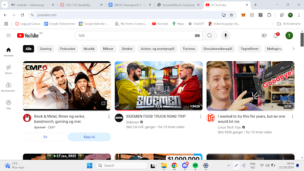

Assignment 3
In Accessibility for Everyone, Laura Kalbag emphasizes the importance of empathy in web design, noting that "Empathy is the ability to share the feelings of others. It's what makes us good at creating products for other people as we can better understand their problems and create solutions that fit their needs" (Kalbag, p. 8). This is especially true for websites that need to serve a wide range of users with different levels of technical expertise.
YouTube is an excellent example of how empathy in design can help create a layered experience for users. As someone who visits the site frequently, I hadn’t considered before how well its design caters to users with varying levels of computer literacy. The homepage presents the most basic functions first, making it intuitive for new users. For example, the main feature—videos—are displayed prominently and can be accessed with just a single click. Even a first-time user can quickly find and click on something to watch.
More advanced tools are there for daily users, like the search bar for specific content and the expandable menu on the left for accessing subscriptions, playlists, and other options. This layered complexity reflects YouTube’s ability to cater to both novice and experienced users. By progressively introducing features, the site makes it easier for new users to navigate while allowing experienced users to delve deeper into the platform’s offerings.
This thoughtful, empathetic design approach shows how important it is to consider all types of users when creating web products. Below is a screenshot highlighting these features on YouTube’s homepage.
Illustrative screenshot to understand my points.